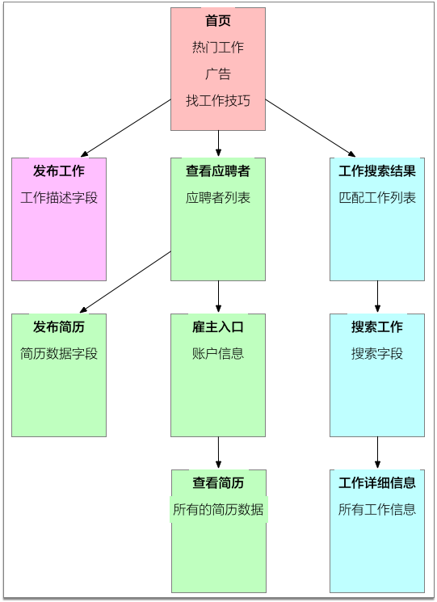

<!DOCTYPE HTML>
<html lang="" >
    <head>
        <meta charset="UTF-8">
        <meta content="text/html; charset=utf-8" http-equiv="Content-Type">
        <title>4.3.4. 故事编写工作坊 · GitBook</title>
        <meta http-equiv="X-UA-Compatible" content="IE=edge" />
        <meta name="description" content="">
        <meta name="generator" content="GitBook 3.2.3">
        
        
        
    
    <link rel="stylesheet" href="../gitbook/style.css">

    
            
                
                <link rel="stylesheet" href="../gitbook/gitbook-plugin-anchors/plugin.css">
                
            
                
                <link rel="stylesheet" href="../gitbook/gitbook-plugin-highlight/website.css">
                
            
                
                <link rel="stylesheet" href="../gitbook/gitbook-plugin-search/search.css">
                
            
                
                <link rel="stylesheet" href="../gitbook/gitbook-plugin-fontsettings/website.css">
                
            
        

    

    
        
    
        
    
        
    
        
    
        
    
        
    

        
    
    
    
    <meta name="HandheldFriendly" content="true"/>
    <meta name="viewport" content="width=device-width, initial-scale=1, user-scalable=no">
    <meta name="apple-mobile-web-app-capable" content="yes">
    <meta name="apple-mobile-web-app-status-bar-style" content="black">
    <link rel="apple-touch-icon-precomposed" sizes="152x152" href="../gitbook/images/apple-touch-icon-precomposed-152.png">
    <link rel="shortcut icon" href="../gitbook/images/favicon.ico" type="image/x-icon">

    
    <link rel="next" href="4.4.html" />
    
    
    <link rel="prev" href="4.3.3.html" />
    

    <style>
    @media only screen and (max-width: 640px) {
        .book-header .hidden-mobile {
            display: none;
        }
    }
    </style>
    <script>
        window["gitbook-plugin-github-buttons"] = {"buttons":[{"user":"tonydeng","repo":"user-stories-applied","type":"star","size":"small","count":true},{"user":"tonydeng","type":"follow","size":"small","width":"170","count":true},{"user":"tonydeng","type":"watch","size":"small","count":true}]};
    </script>

    </head>
    <body>
        
<div class="book">
    <div class="book-summary">
        
            
<div id="book-search-input" role="search">
    <input type="text" placeholder="Type to search" />
</div>

            
                <nav role="navigation">
                


<ul class="summary">
    
    

    

    
        
        
    
        <li class="chapter " data-level="1.1" data-path="../">
            
                <a href="../">
            
                    
                    敏捷的用户故事方法
            
                </a>
            

            
        </li>
    
        <li class="chapter " data-level="1.2" data-path="../starting.html">
            
                <a href="../starting.html">
            
                    
                    一、起步
            
                </a>
            

            
            <ul class="articles">
                
    
        <li class="chapter " data-level="1.2.1" data-path="../ch1/">
            
                <a href="../ch1/">
            
                    
                    1. 背景
            
                </a>
            

            
            <ul class="articles">
                
    
        <li class="chapter " data-level="1.2.1.1" data-path="../ch1/1.1.html">
            
                <a href="../ch1/1.1.html">
            
                    
                    1.1. 什么是用户故事？
            
                </a>
            

            
        </li>
    
        <li class="chapter " data-level="1.2.1.2" data-path="../ch1/1.2.html">
            
                <a href="../ch1/1.2.html">
            
                    
                    1.2. 细节在哪里？
            
                </a>
            

            
        </li>
    
        <li class="chapter " data-level="1.2.1.3" data-path="../ch1/1.3.html">
            
                <a href="../ch1/1.3.html">
            
                    
                    1.3. “必须多长时间完成”
            
                </a>
            

            
        </li>
    
        <li class="chapter " data-level="1.2.1.4" data-path="../ch1/1.4.html">
            
                <a href="../ch1/1.4.html">
            
                    
                    1.4. 客户团队
            
                </a>
            

            
        </li>
    
        <li class="chapter " data-level="1.2.1.5" data-path="../ch1/1.5.html">
            
                <a href="../ch1/1.5.html">
            
                    
                    1.5. 使用故事的过程是怎么样的？
            
                </a>
            

            
        </li>
    
        <li class="chapter " data-level="1.2.1.6" data-path="../ch1/1.6.html">
            
                <a href="../ch1/1.6.html">
            
                    
                    1.6. 规划发布和迭代
            
                </a>
            

            
        </li>
    
        <li class="chapter " data-level="1.2.1.7" data-path="../ch1/1.7.html">
            
                <a href="../ch1/1.7.html">
            
                    
                    1.7. 什么是验收测试？
            
                </a>
            

            
        </li>
    
        <li class="chapter " data-level="1.2.1.8" data-path="../ch1/1.8.html">
            
                <a href="../ch1/1.8.html">
            
                    
                    1.8. 为什么要变成用户故事？
            
                </a>
            

            
        </li>
    
        <li class="chapter " data-level="1.2.1.9" data-path="../ch1/brief.html">
            
                <a href="../ch1/brief.html">
            
                    
                    1.9. 小结
            
                </a>
            

            
        </li>
    

            </ul>
            
        </li>
    
        <li class="chapter " data-level="1.2.2" data-path="../ch2/">
            
                <a href="../ch2/">
            
                    
                    2. 编写故事
            
                </a>
            

            
            <ul class="articles">
                
    
        <li class="chapter " data-level="1.2.2.1" data-path="../ch2/2.1.html">
            
                <a href="../ch2/2.1.html">
            
                    
                    2.1. 独立的
            
                </a>
            

            
        </li>
    
        <li class="chapter " data-level="1.2.2.2" data-path="../ch2/2.2.html">
            
                <a href="../ch2/2.2.html">
            
                    
                    2.2. 可讨论的
            
                </a>
            

            
        </li>
    
        <li class="chapter " data-level="1.2.2.3" data-path="../ch2/2.3.html">
            
                <a href="../ch2/2.3.html">
            
                    
                    2.3. 对用户或客户有价值的
            
                </a>
            

            
        </li>
    
        <li class="chapter " data-level="1.2.2.4" data-path="../ch2/2.4.html">
            
                <a href="../ch2/2.4.html">
            
                    
                    2.4. 可评估的
            
                </a>
            

            
        </li>
    
        <li class="chapter " data-level="1.2.2.5" data-path="../ch2/2.5.html">
            
                <a href="../ch2/2.5.html">
            
                    
                    2.5. 小的
            
                </a>
            

            
        </li>
    
        <li class="chapter " data-level="1.2.2.6" data-path="../ch2/2.6.html">
            
                <a href="../ch2/2.6.html">
            
                    
                    2.6. 可测试的
            
                </a>
            

            
        </li>
    
        <li class="chapter " data-level="1.2.2.7" data-path="../ch2/2.7.html">
            
                <a href="../ch2/2.7.html">
            
                    
                    2.7. 职责
            
                </a>
            

            
        </li>
    
        <li class="chapter " data-level="1.2.2.8" data-path="../ch2/brief.html">
            
                <a href="../ch2/brief.html">
            
                    
                    2.8. 小结
            
                </a>
            

            
        </li>
    

            </ul>
            
        </li>
    
        <li class="chapter " data-level="1.2.3" data-path="../ch3/">
            
                <a href="../ch3/">
            
                    
                    3. 用户角色建模
            
                </a>
            

            
            <ul class="articles">
                
    
        <li class="chapter " data-level="1.2.3.1" data-path="../ch3/3.1.html">
            
                <a href="../ch3/3.1.html">
            
                    
                    3.1. 用户角色
            
                </a>
            

            
        </li>
    
        <li class="chapter " data-level="1.2.3.2" data-path="../ch3/3.2.html">
            
                <a href="../ch3/3.2.html">
            
                    
                    3.2. 角色建模的步骤
            
                </a>
            

            
        </li>
    
        <li class="chapter " data-level="1.2.3.3" data-path="../ch3/3.3.html">
            
                <a href="../ch3/3.3.html">
            
                    
                    3.3. “虚构人物”和“极端人物”
            
                </a>
            

            
        </li>
    
        <li class="chapter " data-level="1.2.3.4" data-path="../ch3/3.4.html">
            
                <a href="../ch3/3.4.html">
            
                    
                    3.4. 如果有现场用户该如何？
            
                </a>
            

            
        </li>
    
        <li class="chapter " data-level="1.2.3.5" data-path="../ch3/3.5.html">
            
                <a href="../ch3/3.5.html">
            
                    
                    3.5. 职责
            
                </a>
            

            
        </li>
    
        <li class="chapter " data-level="1.2.3.6" data-path="../ch3/brief.html">
            
                <a href="../ch3/brief.html">
            
                    
                    3.6. 小结
            
                </a>
            

            
        </li>
    

            </ul>
            
        </li>
    
        <li class="chapter " data-level="1.2.4" data-path="./">
            
                <a href="./">
            
                    
                    4. 收集故事
            
                </a>
            

            
            <ul class="articles">
                
    
        <li class="chapter " data-level="1.2.4.1" data-path="4.1.html">
            
                <a href="4.1.html">
            
                    
                    4.1. 用“拖网”来收集需求
            
                </a>
            

            
        </li>
    
        <li class="chapter " data-level="1.2.4.2" data-path="4.2.html">
            
                <a href="4.2.html">
            
                    
                    4.2. 够用就行，不是吗
            
                </a>
            

            
        </li>
    
        <li class="chapter " data-level="1.2.4.3" data-path="4.3.html">
            
                <a href="4.3.html">
            
                    
                    4.3. 方法
            
                </a>
            

            
            <ul class="articles">
                
    
        <li class="chapter " data-level="1.2.4.3.1" data-path="4.3.1.html">
            
                <a href="4.3.1.html">
            
                    
                    4.3.1. 用户访谈
            
                </a>
            

            
        </li>
    
        <li class="chapter " data-level="1.2.4.3.2" data-path="4.3.2.html">
            
                <a href="4.3.2.html">
            
                    
                    4.3.2. 问卷调查
            
                </a>
            

            
        </li>
    
        <li class="chapter " data-level="1.2.4.3.3" data-path="4.3.3.html">
            
                <a href="4.3.3.html">
            
                    
                    4.3.3. 观察
            
                </a>
            

            
        </li>
    
        <li class="chapter active" data-level="1.2.4.3.4" data-path="4.3.4.html">
            
                <a href="4.3.4.html">
            
                    
                    4.3.4. 故事编写工作坊
            
                </a>
            

            
        </li>
    

            </ul>
            
        </li>
    
        <li class="chapter " data-level="1.2.4.4" data-path="4.4.html">
            
                <a href="4.4.html">
            
                    
                    4.4. 职责
            
                </a>
            

            
        </li>
    
        <li class="chapter " data-level="1.2.4.5" data-path="brief.html">
            
                <a href="brief.html">
            
                    
                    4.5. 小结
            
                </a>
            

            
        </li>
    

            </ul>
            
        </li>
    
        <li class="chapter " data-level="1.2.5" data-path="../ch5/">
            
                <a href="../ch5/">
            
                    
                    5. 与用户代理合作
            
                </a>
            

            
            <ul class="articles">
                
    
        <li class="chapter " data-level="1.2.5.1" data-path="../ch5/5.1.html">
            
                <a href="../ch5/5.1.html">
            
                    
                    5.1 用户的经理
            
                </a>
            

            
        </li>
    
        <li class="chapter " data-level="1.2.5.2" data-path="../ch5/5.2.html">
            
                <a href="../ch5/5.2.html">
            
                    
                    5.2 开发经理
            
                </a>
            

            
        </li>
    
        <li class="chapter " data-level="1.2.5.3" data-path="../ch5/5.3.html">
            
                <a href="../ch5/5.3.html">
            
                    
                    5.3 销售人员
            
                </a>
            

            
        </li>
    
        <li class="chapter " data-level="1.2.5.4" data-path="../ch5/5.4.html">
            
                <a href="../ch5/5.4.html">
            
                    
                    5.4 领域专家
            
                </a>
            

            
        </li>
    
        <li class="chapter " data-level="1.2.5.5" data-path="../ch5/5.5.html">
            
                <a href="../ch5/5.5.html">
            
                    
                    5.5 市场营销团队
            
                </a>
            

            
        </li>
    
        <li class="chapter " data-level="1.2.5.6" data-path="../ch5/5.6.html">
            
                <a href="../ch5/5.6.html">
            
                    
                    5.6 以前的用户
            
                </a>
            

            
        </li>
    
        <li class="chapter " data-level="1.2.5.7" data-path="../ch5/5.7.html">
            
                <a href="../ch5/5.7.html">
            
                    
                    5.7 客户
            
                </a>
            

            
        </li>
    
        <li class="chapter " data-level="1.2.5.8" data-path="../ch5/5.8.html">
            
                <a href="../ch5/5.8.html">
            
                    
                    5.8 培训师和技术支持
            
                </a>
            

            
        </li>
    
        <li class="chapter " data-level="1.2.5.9" data-path="../ch5/5.9.html">
            
                <a href="../ch5/5.9.html">
            
                    
                    5.9 业务分析师或系统分析师
            
                </a>
            

            
        </li>
    
        <li class="chapter " data-level="1.2.5.10" data-path="../ch5/5.10.html">
            
                <a href="../ch5/5.10.html">
            
                    
                    5.10 与用户代理合作时，做些什么？
            
                </a>
            

            
        </li>
    
        <li class="chapter " data-level="1.2.5.11" data-path="../ch5/5.11.html">
            
                <a href="../ch5/5.11.html">
            
                    
                    5.11 可以自己来吗？
            
                </a>
            

            
        </li>
    
        <li class="chapter " data-level="1.2.5.12" data-path="../ch5/5.12.html">
            
                <a href="../ch5/5.12.html">
            
                    
                    5.12 建立客户团队
            
                </a>
            

            
        </li>
    
        <li class="chapter " data-level="1.2.5.13" data-path="../ch5/5.13.html">
            
                <a href="../ch5/5.13.html">
            
                    
                    5.13 职责
            
                </a>
            

            
        </li>
    
        <li class="chapter " data-level="1.2.5.14" data-path="../ch5/brief.html">
            
                <a href="../ch5/brief.html">
            
                    
                    5.14 小结
            
                </a>
            

            
        </li>
    

            </ul>
            
        </li>
    
        <li class="chapter " data-level="1.2.6" data-path="../ch6/">
            
                <a href="../ch6/">
            
                    
                    6. 用户故事验收测试
            
                </a>
            

            
            <ul class="articles">
                
    
        <li class="chapter " data-level="1.2.6.1" data-path="../ch6/6.1.html">
            
                <a href="../ch6/6.1.html">
            
                    
                    6.1. 在写代码之前写测试
            
                </a>
            

            
        </li>
    
        <li class="chapter " data-level="1.2.6.2" data-path="../ch6/6.2.html">
            
                <a href="../ch6/6.2.html">
            
                    
                    6.2. 客户定义测试
            
                </a>
            

            
        </li>
    
        <li class="chapter " data-level="1.2.6.3" data-path="../ch6/6.3.html">
            
                <a href="../ch6/6.3.html">
            
                    
                    6.3. 测试是过程的一部分
            
                </a>
            

            
        </li>
    
        <li class="chapter " data-level="1.2.6.4" data-path="../ch6/6.4.html">
            
                <a href="../ch6/6.4.html">
            
                    
                    6.4. 多少测试才算多？
            
                </a>
            

            
        </li>
    
        <li class="chapter " data-level="1.2.6.5" data-path="../ch6/6.5.html">
            
                <a href="../ch6/6.5.html">
            
                    
                    6.5. 验收测试
            
                </a>
            

            
        </li>
    
        <li class="chapter " data-level="1.2.6.6" data-path="../ch6/6.6.html">
            
                <a href="../ch6/6.6.html">
            
                    
                    6.6. 测试类型
            
                </a>
            

            
        </li>
    
        <li class="chapter " data-level="1.2.6.7" data-path="../ch6/6.7.html">
            
                <a href="../ch6/6.7.html">
            
                    
                    6.7. 职责
            
                </a>
            

            
        </li>
    
        <li class="chapter " data-level="1.2.6.8" data-path="../ch6/brief.html">
            
                <a href="../ch6/brief.html">
            
                    
                    6.8. 小结
            
                </a>
            

            
        </li>
    

            </ul>
            
        </li>
    
        <li class="chapter " data-level="1.2.7" data-path="../ch7/">
            
                <a href="../ch7/">
            
                    
                    7. 优秀的用户故事准则
            
                </a>
            

            
            <ul class="articles">
                
    
        <li class="chapter " data-level="1.2.7.1" data-path="../ch7/7.1.html">
            
                <a href="../ch7/7.1.html">
            
                    
                    7.1. 从目标故事开始
            
                </a>
            

            
        </li>
    
        <li class="chapter " data-level="1.2.7.2" data-path="../ch7/7.2.html">
            
                <a href="../ch7/7.2.html">
            
                    
                    7.2. 切蛋糕
            
                </a>
            

            
        </li>
    
        <li class="chapter " data-level="1.2.7.3" data-path="../ch7/7.3.html">
            
                <a href="../ch7/7.3.html">
            
                    
                    7.3. 编写封闭的故事
            
                </a>
            

            
        </li>
    
        <li class="chapter " data-level="1.2.7.4" data-path="../ch7/7.4.html">
            
                <a href="../ch7/7.4.html">
            
                    
                    7.4. 卡片约束
            
                </a>
            

            
        </li>
    
        <li class="chapter " data-level="1.2.7.5" data-path="../ch7/7.5.md">
            
                <span>
            
                    
                    7.5. 根据实现时间来确定故事规模
            
                </a>
            

            
        </li>
    
        <li class="chapter " data-level="1.2.7.6" data-path="../ch7/7.6.md">
            
                <span>
            
                    
                    7.6. 有些需求并不是故事
            
                </a>
            

            
        </li>
    
        <li class="chapter " data-level="1.2.7.7" data-path="../ch7/7.7.md">
            
                <span>
            
                    
                    7.7. 在故事里包含故事角色
            
                </a>
            

            
        </li>
    
        <li class="chapter " data-level="1.2.7.8" data-path="../ch7/7.8.md">
            
                <span>
            
                    
                    7.8. 只为一个用户编写
            
                </a>
            

            
        </li>
    
        <li class="chapter " data-level="1.2.7.9" data-path="../ch7/7.9.md">
            
                <span>
            
                    
                    7.9. 以主动语态编写
            
                </a>
            

            
        </li>
    
        <li class="chapter " data-level="1.2.7.10" data-path="../ch7/7.10.md">
            
                <span>
            
                    
                    7.10. 有客户编写
            
                </a>
            

            
        </li>
    
        <li class="chapter " data-level="1.2.7.11" data-path="../ch7/7.11.md">
            
                <span>
            
                    
                    7.11. 不要忘记意图
            
                </a>
            

            
        </li>
    
        <li class="chapter " data-level="1.2.7.12" data-path="../ch7/brief.md">
            
                <span>
            
                    
                    7.12. 小结
            
                </a>
            

            
        </li>
    

            </ul>
            
        </li>
    

            </ul>
            
        </li>
    

    

    <li class="divider"></li>

    <li>
        <a href="https://www.gitbook.com" target="blank" class="gitbook-link">
            Published with GitBook
        </a>
    </li>
</ul>


                </nav>
            
        
    </div>

    <div class="book-body">
        
            <div class="body-inner">
                
                    

<div class="book-header" role="navigation">
    

    <!-- Title -->
    <h1>
        <i class="fa fa-circle-o-notch fa-spin"></i>
        <a href=".." >4.3.4. 故事编写工作坊</a>
    </h1>
</div>


                    <div class="page-wrapper" tabindex="-1" role="main">
                        <div class="page-inner">
                            
<div id="book-search-results">
    <div class="search-noresults">
    
                                <section class="normal markdown-section">
                                
                                <h1 id="434-&#x6545;&#x4E8B;&#x7F16;&#x5199;&#x5DE5;&#x4F5C;&#x574A;"><a name="434-&#x6545;&#x4E8B;&#x7F16;&#x5199;&#x5DE5;&#x4F5C;&#x574A;" class="plugin-anchor" href="#434-&#x6545;&#x4E8B;&#x7F16;&#x5199;&#x5DE5;&#x4F5C;&#x574A;"><i class="fa fa-link" aria-hidden="true"></i></a>4.3.4. &#x6545;&#x4E8B;&#x7F16;&#x5199;&#x5DE5;&#x4F5C;&#x574A;</h1>
<p></p>
<p><strong>&#x6545;&#x4E8B;&#x7F16;&#x5199;&#x5DE5;&#x4F5C;&#x574A;&#x662F;&#x5F00;&#x53D1;&#x4EBA;&#x5458;&#x3001;&#x7528;&#x6237;&#x3001;&#x4EA7;&#x54C1;&#x548C;&#x5176;&#x4ED6;&#x5BF9;&#x7F16;&#x5199;&#x6545;&#x4E8B;&#x6709;&#x5E2E;&#x52A9;&#x7684;&#x4EBA;&#x5171;&#x540C;&#x53C2;&#x52A0;&#x7684;&#x4F1A;&#x8BAE;</strong>&#x3002;</p>
<p>&#x5728;&#x5DE5;&#x4F5C;&#x574A;&#x671F;&#x95F4;&#xFF0C;&#x53C2;&#x4E0E;&#x4EBA;&#x5458;&#x7F16;&#x5199;&#x5C3D;&#x53EF;&#x80FD;&#x591A;&#x7684;&#x6545;&#x4E8B;&#xFF0C;&#x6B64;&#x65F6;&#x4E0D;&#x5BF9;&#x6545;&#x4E8B;&#x6392;&#x4F18;&#x5148;&#x7EA7;&#x3002;</p>
<p>&#x6B63;&#x786E;&#x4E3E;&#x529E;&#x6545;&#x4E8B;&#x7F16;&#x5199;&#x5DE5;&#x4F5C;&#x574A;&#x53EF;&#x4EE5;&#x975E;&#x5E38;&#x5FEB;&#x901F;&#x7684;&#x7F16;&#x5199;&#x5927;&#x91CF;&#x6545;&#x4E8B;&#x3002;<strong>&#x826F;&#x597D;&#x7684;&#x6545;&#x4E8B;&#x7F16;&#x5199;&#x5DE5;&#x4F5C;&#x574A;&#x7ED3;&#x5408;&#x4E86;&#x5934;&#x8111;&#x98CE;&#x66B4;&#x7684;&#x6700;&#x4F73;&#x8981;&#x7D20;&#x548C;&#x7B80;&#x5355;&#x539F;&#x578B;&#x6CD5;</strong>&#x3002;&#x53EF;&#x4EE5;&#x628A;&#x4E00;&#x4E2A;&#x7B80;&#x5355;&#x539F;&#x578B;&#x753B;&#x5728;&#x7EB8;&#x4E0A;&#xFF0C;&#x7B14;&#x8BB0;&#x672C;&#x4E0A;&#xFF0C;&#x767D;&#x677F;&#x4E0A;&#xFF0C;&#x5E76;&#x753B;&#x51FA;&#x8F6F;&#x4EF6;&#x5185;&#x90E8;&#x9AD8;&#x5C42;&#x4E4B;&#x95F4;&#x7684;&#x4EA4;&#x4E92;&#x3002;&#x5728;&#x5DE5;&#x4F5C;&#x574A;&#x4E2D;&#xFF0C;&#x968F;&#x7740;&#x53C2;&#x4E0E;&#x8005;&#x5BF9;&#x7528;&#x6237;&#x5728;&#x4F7F;&#x7528;&#x8F6F;&#x4EF6;&#x8FC7;&#x7A0B;&#x4E2D;&#x53EF;&#x80FD;&#x8981;&#x505A;&#x7684;&#x4E8B;&#x60C5;&#x8FDB;&#x884C;&#x5934;&#x8111;&#x98CE;&#x66B4;&#xFF0C;&#x4E0D;&#x65AD;&#x6784;&#x5EFA;&#x539F;&#x578B;&#x3002;&#x8FD9;&#x5E76;&#x4E0D;&#x662F;&#x50CF;&#x4F20;&#x7EDF;&#x539F;&#x578B;&#x6CD5;&#x6216;&#x8054;&#x5408;&#x5E94;&#x7528;&#x8BBE;&#x8BA1;&#x4E2D;&#xFF0C;&#x8981;&#x786E;&#x5B9A;&#x5B9E;&#x9645;&#x754C;&#x9762;&#x548C;&#x5B57;&#x6BB5;&#xFF0C;&#x53EA;&#x662F;&#x4E3A;&#x4E86;<strong>&#x4ECE;&#x6982;&#x5FF5;&#x4E0A;&#x786E;&#x5B9A;&#x5DE5;&#x4F5C;&#x6D41;</strong>&#x3002;</p>
<h2 id="&#x6545;&#x4E8B;&#x4E0E;&#x7B80;&#x5355;&#x539F;&#x578B;"><a name="&#x6545;&#x4E8B;&#x4E0E;&#x7B80;&#x5355;&#x539F;&#x578B;" class="plugin-anchor" href="#&#x6545;&#x4E8B;&#x4E0E;&#x7B80;&#x5355;&#x539F;&#x578B;"><i class="fa fa-link" aria-hidden="true"></i></a>&#x6545;&#x4E8B;&#x4E0E;&#x7B80;&#x5355;&#x539F;&#x578B;</h2>
<p>&#x6BD4;&#x5982;&#xFF0C;&#x4E0B;&#x9762;&#x5C31;&#x662F;&#x901A;&#x8FC7;&#x6545;&#x4E8B;&#x7F16;&#x5199;&#x5DE5;&#x4F5C;&#x574A;&#x6574;&#x7406;&#x7684;&#x62DB;&#x8058;&#x7F51;&#x7AD9;&#x7684;&#x7B80;&#x5355;&#x539F;&#x578B;&#x3002;</p>
<p></p>
<p>&#x5176;&#x4E2D;&#xFF1A;</p>
<ul>
<li>&#x6BCF;&#x4E2A;&#x65B9;&#x6846;&#x4EE3;&#x8868;&#x7740;&#x7F51;&#x7AD9;&#x7684;&#x4E00;&#x4E2A;&#x65B0;&#x7EC4;&#x4EF6;</li>
<li>&#x65B9;&#x6846;&#x4E2D;&#x5E26;&#x6709;&#x52A0;&#x7C97;&#x7684;&#x6587;&#x5B57;&#x662F;&#x7EC4;&#x4EF6;&#x7684;&#x6807;&#x9898;</li>
<li>&#x6807;&#x9898;&#x4E0B;&#x9762;&#x662F;&#x7EC4;&#x4EF6;&#x8981;&#x505A;&#x7684;&#x548C;&#x5305;&#x542B;&#x7684;&#x5217;&#x8868;</li>
<li>&#x65B9;&#x6846;&#x95F4;&#x7684;&#x7BAD;&#x5934;&#x6807;&#x793A;&#x7EC4;&#x4EF6;&#x95F4;&#x7684;&#x94FE;&#x63A5;</li>
</ul>
<p>&#x5BF9;&#x4E8E;&#x4E00;&#x4E2A;&#x7F51;&#x7AD9;&#xFF0C;&#x7EC4;&#x4EF6;&#x53EF;&#x80FD;&#x662F;&#x4E00;&#x4E2A;&#x65B0;&#x7684;&#x9875;&#x9762;&#x6216;&#x5F53;&#x524D;&#x9875;&#x9762;&#x7684;&#x4E00;&#x5757;&#x533A;&#x57DF;&#x3002;&#x6240;&#x4EE5;&#xFF0C;&#x6BCF;&#x4E00;&#x4E2A;&#x94FE;&#x63A5;&#x610F;&#x5473;&#x7740;&#x5F39;&#x51FA;&#x4E00;&#x4E2A;&#x65B0;&#x9875;&#x9762;&#x6216;&#x8005;&#x5728;&#x540C;&#x4E00;&#x4E2A;&#x9875;&#x9762;&#x4E0A;&#x663E;&#x793A;&#x4FE1;&#x606F;&#x3002;</p>
<blockquote>
<p>&#x6BD4;&#x5982;&#xFF0C;&#x641C;&#x7D22;&#x5DE5;&#x4F5C;&#x53EF;&#x80FD;&#x662F;&#x4E00;&#x4E2A;&#x9875;&#x9762;&#x6216;&#x8005;&#x9996;&#x9875;&#x4E0A;&#x7684;&#x4E00;&#x5757;&#x533A;&#x57DF;&#x3002;</p>
</blockquote>
<p>&#x5F00;&#x59CB;&#x753B;&#x539F;&#x578B;&#x524D;&#xFF0C;&#x9996;&#x5148;&#x8981;&#x51B3;&#x5B9A;&#x4ECE;&#x54EA;&#x79CD;&#x7528;&#x6237;&#x89D2;&#x8272;&#x5F00;&#x59CB;&#x3002;&#x9700;&#x8981;&#x7528;&#x6BCF;&#x4E2A;&#x89D2;&#x8272;&#x6765;&#x91CD;&#x590D;&#x8FD9;&#x4E2A;&#x8FC7;&#x7A0B;&#xFF0C;&#x4E0D;&#x8BBA;&#x4EC0;&#x4E48;&#x987A;&#x5E8F;&#x3002;&#x7136;&#x540E;&#xFF0C;&#x753B;&#x4E00;&#x4E2A;&#x7A7A;&#x7684;&#x65B9;&#x6846;&#xFF0C;&#x544A;&#x8BC9;&#x53C2;&#x4E0E;&#x8005;&#x8FD9;&#x662F;&#x8F6F;&#x4EF6;&#x7684;&#x4E3B;&#x754C;&#x9762;&#xFF0C;&#x8BE2;&#x95EE;&#x4ED6;&#x4EEC;&#x5F53;&#x524D;&#x8FD9;&#x4E2A;&#x7528;&#x6237;&#x89D2;&#x8272;&#x80FD;&#x5728;&#x8FD9;&#x4E2A;&#x754C;&#x9762;&#x505A;&#x4EC0;&#x4E48;&#x3002;&#x5373;&#x4F7F;&#x4F60;&#x73B0;&#x5728;&#x8FD8;&#x4E0D;&#x77E5;&#x9053;&#x4E3B;&#x754C;&#x9762;&#x662F;&#x4EC0;&#x4E48;&#xFF0C;&#x6709;&#x4EC0;&#x4E48;&#x7528;&#xFF0C;&#x8FD9;&#x4E5F;&#x6CA1;&#x6709;&#x5173;&#x7CFB;&#x3002;&#x53C2;&#x4E0E;&#x8005;&#x4F1A;&#x60F3;&#x51FA;&#x89D2;&#x8272;&#x4F1A;&#x505A;&#x4EC0;&#x4E48;&#x3002;&#x5BF9;&#x89D2;&#x8272;&#x505A;&#x7684;&#x6BCF;&#x4E00;&#x4EF6;&#x4E8B;&#x60C5;&#xFF0C;&#x753B;&#x4E00;&#x6761;&#x6307;&#x5411;&#x4E00;&#x4E2A;&#x65B0;&#x7684;&#x65B9;&#x6846;&#xFF0C;&#x7136;&#x540E;&#x5199;&#x4E00;&#x4E2A;&#x6545;&#x4E8B;&#x3002;</p>
<p>&#x6BD4;&#x5982;&#x4E0A;&#x9762;&#x7684;&#x56FE;&#xFF0C;&#x6211;&#x4EEC;&#x53EF;&#x4EE5;&#x5F97;&#x51FA;&#x4EE5;&#x4E0B;&#x6545;&#x4E8B;&#xFF1A;</p>
<ul>
<li>&#x6C42;&#x804C;&#x8005;&#x53EF;&#x4EE5;&#x53D1;&#x5E03;&#x4ED6;&#x7684;&#x7B80;&#x5386;</li>
<li>&#x96C7;&#x4E3B;&#x53EF;&#x4EE5;&#x53D1;&#x5E03;&#x5DE5;&#x4F5C;</li>
<li>&#x6C42;&#x804C;&#x8005;&#x53EF;&#x4EE5;&#x641C;&#x7D22;&#x5DE5;&#x4F5C;</li>
<li>&#x6C42;&#x804C;&#x8005;&#x53EF;&#x4EE5;&#x770B;&#x5230;&#x641C;&#x7D22;&#x6761;&#x4EF6;&#x7684;&#x5DE5;&#x4F5C;</li>
<li>&#x6C42;&#x804C;&#x8005;&#x53EF;&#x4EE5;&#x770B;&#x5230;&#x6307;&#x5B9A;&#x5DE5;&#x4F5C;&#x7684;&#x8BE6;&#x7EC6;&#x4FE1;&#x606F;</li>
</ul>
<p>&#x8FD9;&#x4E9B;&#x6545;&#x4E8B;&#x90FD;&#x4E0D;&#x9700;&#x8981;&#x754C;&#x9762;&#x662F;&#x8BE5;&#x5982;&#x4F55;&#x8BBE;&#x8BA1;&#x3002;&#x4F46;&#x662F;&#xFF0C;<strong>&#x8D70;&#x4E00;&#x904D;&#x6D41;&#x7A0B;</strong>&#x53EF;&#x4EE5;&#x5E2E;&#x52A9;&#x5927;&#x5BB6;&#x60F3;&#x51FA;&#x5C3D;&#x53EF;&#x80FD;&#x591A;&#x7684;&#x6545;&#x4E8B;&#x3002;</p>
<p> &#x6211;&#x53D1;&#x73B0;<strong>&#x6DF1;&#x5EA6;&#x4F18;&#x5148;&#x7684;&#x65B9;&#x6CD5;&#x6700;&#x6709;&#x6548;</strong>&#xFF1A;</p>
<blockquote>
<p>&#x5BF9;&#x4E8E;&#x7B2C;&#x4E00;&#x4E2A;&#x7EC4;&#x4EF6;&#xFF0C;&#x5199;&#x4E0B;&#x4E3B;&#x8981;&#x7684;&#x7EC6;&#x8282;&#xFF0C;&#x63A5;&#x7740;&#x662F;&#x4E0E;&#x7B2C;&#x4E00;&#x4E2A;&#x7EC4;&#x4EF6;&#x76F8;&#x8FDE;&#x7684;&#x7EC4;&#x4EF6;B&#xFF0C;&#x4E00;&#x6837;&#x5199;&#x4E0B;&#x5176;&#x4E3B;&#x8981;&#x7684;&#x7EC6;&#x8282;&#x3002;&#x7136;&#x540E;&#x662F;&#x4E0E;B&#x76F8;&#x8FDE;&#x7684;&#x7EC4;&#x4EF6;&#xFF0C;&#x800C;&#x4E0D;&#x662F;&#x56DE;&#x5230;&#x7B2C;&#x4E00;&#x4E2A;&#x7EC4;&#x4EF6;A&#xFF0C;&#x63CF;&#x8FF0;&#x5176;&#x4ED6;&#x4E0E;A&#x76F8;&#x8FDE;&#x7684;&#x7EC4;&#x4EF6;&#x3002;</p>
</blockquote>
<p> &#x5E7F;&#x5EA6;&#x4F18;&#x5148;&#x7684;&#x529E;&#x6CD5;&#x975E;&#x5E38;&#x4E0D;&#x5BB9;&#x6613;&#x7406;&#x89E3;&#xFF0C;&#x56E0;&#x4E3A;<strong>&#x5F88;&#x96BE;&#x8BB0;&#x4F4F;&#x81EA;&#x5DF1;&#x521A;&#x624D;&#x5728;&#x54EA;&#x6761;&#x529F;&#x80FD;&#x7EBF;&#x4E0A;</strong>&#x3002;</p>
<p> &#x53E6;&#x5916;&#xFF0C;&#x6211;&#x4EEC;&#x8981;&#x5C3D;&#x5FEB;<strong>&#x6254;&#x6389;&#x7B80;&#x5355;&#x539F;&#x578B;</strong></p>
<blockquote>
<p>&#x5728;&#x753B;&#x597D;&#x7B80;&#x5355;&#x539F;&#x578B;&#x540E;&#x7684;&#x51E0;&#x5929;&#x5185;&#xFF0C;&#x4E00;&#x5B9A;&#x8981;&#x6254;&#x6389;&#x6216;&#x64E6;&#x6389;&#x5B83;&#x3001;
&#x539F;&#x578B;&#x5E76;&#x4E0D;&#x662F;&#x5F00;&#x53D1;&#x6D41;&#x7A0B;&#x4E2D;&#x7684;&#x4E00;&#x4E2A;&#x957F;&#x671F;&#x5DE5;&#x4EF6;&#xFF0C;&#x56E0;&#x4E3A;&#x957F;&#x671F;&#x7559;&#x7740;&#x53EF;&#x80FD;&#x4F1A;&#x5BFC;&#x81F4;&#x4E0D;&#x5FC5;&#x8981;&#x7684;&#x56F0;&#x60D1;&#x3002;
&#x5982;&#x679C;&#x89C9;&#x5F97;&#x5728;&#x6545;&#x4E8B;&#x7F16;&#x5199;&#x5DE5;&#x4F5C;&#x574A;&#x4E2D;&#x8FD8;&#x6709;&#x53D1;&#x73B0;&#x6240;&#x6709;&#x6545;&#x4E8B;&#xFF0C;&#x53EF;&#x4EE5;&#x628A;&#x539F;&#x578B;&#x4FDD;&#x7559;&#x51E0;&#x5929;&#xFF0C;&#x518D;&#x770B;&#x770B;&#x662F;&#x5426;&#x8FD8;&#x80FD;&#x5199;&#x51FA;&#x4E00;&#x4E9B;&#x6F0F;&#x6389;&#x7684;&#x6545;&#x4E8B;&#xFF0C;&#x7136;&#x540E;&#x518D;&#x8003;&#x8651;&#x6254;&#x6389;&#x5B83;&#x3002;</p>
</blockquote>
<p> &#x5728;&#x753B;&#x539F;&#x578B;&#x7684;&#x8FC7;&#x7A0B;&#x4E2D;&#xFF0C;<strong>&#x95EE;&#x4E00;&#x4E9B;&#x6709;&#x52A9;&#x4E8E;&#x627E;&#x5230;&#x9057;&#x6F0F;&#x6545;&#x4E8B;&#x7684;&#x95EE;&#x9898;</strong>&#xFF0C;&#x793A;&#x4F8B;&#x5982;&#x4E0B;&#xFF1A;</p>
<ul>
<li>&#x7528;&#x6237;&#x63A5;&#x4E0B;&#x6765;&#x6700;&#x6709;&#x53EF;&#x80FD;&#x505A;&#x4EC0;&#x4E48;&#xFF1F;</li>
<li>&#x7528;&#x6237;&#x4F1A;&#x5728;&#x8FD9;&#x91CC;&#x72AF;&#x4EC0;&#x4E48;&#x9519;&#x8BEF;&#xFF1F;</li>
<li>&#x5728;&#x8FD9;&#x91CC;&#xFF0C;&#x7528;&#x6237;&#x4F1A;&#x6709;&#x4EC0;&#x4E48;&#x56F0;&#x60D1;&#xFF1F;</li>
<li><p>&#x7528;&#x6237;&#x9700;&#x8981;&#x4EC0;&#x4E48;&#x989D;&#x5916;&#x7684;&#x4FE1;&#x606F;&#xFF1F;</p>
<p>&#x5728;&#x95EE;&#x8FD9;&#x4E9B;&#x95EE;&#x9898;&#x662F;&#xFF0C;&#x8003;&#x8651;&#x4E00;&#x4E0B;&#x5F53;&#x65F6;&#x7528;&#x6237;&#x7684;&#x89D2;&#x8272;&#x3002;<strong>&#x8BB8;&#x591A;&#x7B54;&#x6848;&#x90FD;&#x548C;&#x7528;&#x6237;&#x5F53;&#x65F6;&#x89D2;&#x8272;&#x6709;&#x5173;</strong>&#x3002;</p>
<h2 id="&#x539F;&#x5219;"><a name="&#x539F;&#x5219;" class="plugin-anchor" href="#&#x539F;&#x5219;"><i class="fa fa-link" aria-hidden="true"></i></a>&#x539F;&#x5219;</h2>
<p>&#x5728;&#x6545;&#x4E8B;&#x7F16;&#x5199;&#x5DE5;&#x4F5C;&#x574A;&#x671F;&#x95F4;&#xFF0C;&#x6211;&#x4EEC;&#x6709;&#x4E00;&#x4E9B;&#x5DE5;&#x4F5C;&#x7684;<strong>&#x539F;&#x5219;</strong>&#x9700;&#x8981;&#x5927;&#x5BB6;&#x90FD;<strong>&#x4E86;&#x89E3;&#x5E76;&#x4E14;&#x9075;&#x5B88;</strong>&#xFF1A;</p>
</li>
<li><p>&#x5E94;&#x8BE5;&#x628A;&#x91CD;&#x70B9;&#x653E;&#x5728;&#x6570;&#x91CF;&#x4E0A;&#xFF0C;&#x800C;&#x4E0D;&#x662F;&#x8D28;&#x91CF;&#x4E0A;&#x3002;</p>
</li>
<li>&#x5373;&#x4F7F;&#x6700;&#x540E;&#x4F1A;&#x7528;&#x7535;&#x5B50;&#x65B9;&#x5F0F;&#x4FDD;&#x5B58;&#x6545;&#x4E8B;&#xFF0C;&#x4F46;&#x5728;&#x5DE5;&#x4F5C;&#x574A;&#x91CC;&#x6700;&#x597D;&#x8FD8;&#x662F;&#x4F7F;&#x7528;&#x5361;&#x7247;&#x3002;</li>
<li>&#x53EA;&#x9700;&#x628A;&#x60F3;&#x6CD5;&#x8BB0;&#x5F55;&#x4E0B;&#x6765;&#x5C31;&#x884C;&#x3002;&#x6700;&#x521D;&#x5927;&#x5BB6;&#x89C9;&#x5F97;&#x4E0D;&#x597D;&#x7684;&#x6545;&#x4E8B;&#x7ECF;&#x8FC7;&#x51E0;&#x4E2A;&#x5C0F;&#x65F6;&#x540E;&#x53EF;&#x80FD;&#x4F1A;&#x53D8;&#x5F97;&#x5F88;&#x68D2;&#xFF0C;&#x6216;&#x8005;&#x4F1A;&#x6FC0;&#x53D1;&#x6211;&#x4EEC;&#x76F8;&#x5904;&#x5176;&#x4ED6;&#x6545;&#x4E8B;&#x3002;</li>
<li>&#x4E0D;&#x8981;&#x4E3A;&#x6BCF;&#x4E2A;&#x6545;&#x4E8B;&#x90FD;&#x9677;&#x5165;&#x957F;&#x65F6;&#x95F4;&#x7684;&#x8BA8;&#x8BBA;&#x4E2D;&#x3002;</li>
<li><p>&#x5982;&#x679C;&#x4E00;&#x4E2A;&#x6545;&#x4E8B;&#x662F;&#x591A;&#x4F59;&#x6216;&#x8005;&#x80FD;&#x88AB;&#x66F4;&#x597D;&#x7684;&#x6545;&#x4E8B;&#x66FF;&#x6362;&#xFF0C;&#x5C31;&#x6254;&#x6389;&#x8FD9;&#x4E2A;&#x6545;&#x4E8B;&#x3002;</p>
<h2 id="&#x5C0F;&#x6280;&#x5DE7;"><a name="&#x5C0F;&#x6280;&#x5DE7;" class="plugin-anchor" href="#&#x5C0F;&#x6280;&#x5DE7;"><i class="fa fa-link" aria-hidden="true"></i></a>&#x5C0F;&#x6280;&#x5DE7;</h2>
<p>&#x53E6;&#x5916;&#xFF0C;&#x8FD8;&#x6709;&#x4E00;&#x4E9B;<strong>&#x5C0F;&#x6280;&#x5DE7;</strong>&#x80FD;&#x591F;&#x8BA9;&#x5DE5;&#x4F5C;&#x574A;&#x8FDB;&#x884C;&#x7684;&#x66F4;&#x52A0;&#x987A;&#x5229;&#x3002;</p>
</li>
<li><p>&#x53EF;&#x4EE5;&#x7EF4;&#x62A4;&#x4E00;&#x4E2A;&#x5F85;&#x529E;&#x95EE;&#x9898;&#x5217;&#x8868;&#xFF0C;&#x5C06;&#x4E00;&#x4E9B;&#x5F53;&#x524D;&#x4E0D;&#x662F;&#x6700;&#x91CD;&#x8981;&#x7684;&#x6545;&#x4E8B;&#x8BB0;&#x5F55;&#x5176;&#x4E2D;&#xFF0C;&#x7559;&#x7740;&#x4EE5;&#x540E;&#x518D;&#x6765;&#x89E3;&#x51B3;&#x3002;</p>
</li>
<li>&#x5982;&#x679C;&#x6211;&#x4EEC;&#x5361;&#x5728;&#x67D0;&#x4E2A;&#x70B9;&#x8FC7;&#x4E0D;&#x53BB;&#xFF0C;&#x8FD9;&#x65F6;&#x4E0D;&#x59A8;&#x770B;&#x770B;&#x7ADE;&#x4E89;&#x5BF9;&#x624B;&#x7684;&#x4EA7;&#x54C1;&#x6216;&#x7C7B;&#x4F3C;&#x7684;&#x4EA7;&#x54C1;&#x3002;</li>
<li><p>&#x7559;&#x610F;&#x5728;&#x5DE5;&#x4F5C;&#x574A;&#x4E2D;&#x6210;&#x5458;&#x7684;&#x8D21;&#x732E;&#x3002;&#x6709;&#x4E9B;&#x53C2;&#x4E0E;&#x8005;&#x5728;&#x5927;&#x90E8;&#x5206;&#x6216;&#x8005;&#x6574;&#x4E2A;&#x671F;&#x95F4;&#x90FD;&#x4FDD;&#x6301;&#x6C89;&#x9ED8;&#xFF0C;&#x53EF;&#x4EE5;&#x5728;&#x4E2D;&#x95F4;&#x4F11;&#x606F;&#x7684;&#x65F6;&#x5019;&#x548C;&#x8FD9;&#x4E2A;&#x53C2;&#x4E0E;&#x8005;&#x8C08;&#x8C08;&#xFF0C;&#x786E;&#x5B9A;&#x4ED6;&#x5E76;&#x4E0D;&#x662F;&#x4E0D;&#x9002;&#x5B9C;&#x8FD9;&#x4E2A;&#x8FC7;&#x7A0B;&#x3002;&#x8981;&#x8BA9;&#x53C2;&#x4E0E;&#x8005;&#x89C9;&#x5F97;&#x5927;&#x5BB6;&#x53EA;&#x662F;&#x5728;&#x8BB0;&#x5F55;&#x800C;&#x4E0D;&#x662F;&#x8BC4;&#x4EF7;&#x6545;&#x4E8B;&#xFF0C;&#x4F1A;&#x66F4;&#x4E50;&#x4E8E;&#x53C2;&#x4E0E;&#x3002;</p>
<p>&#x6700;&#x540E;&#xFF0C;&#x518D;&#x6B21;&#x91CD;&#x7533;&#x6545;&#x4E8B;&#x7F16;&#x5199;&#x5DE5;&#x4F5C;&#x574A;&#x4E2D;&#x7684;&#x8BA8;&#x8BBA;&#x5E94;&#x8BE5;&#x5728;<strong>&#x8F83;&#x9AD8;&#x5C42;&#x9762;</strong>&#x4E0A;&#x3002;&#x6211;&#x4EEC;&#x7684;<strong>&#x76EE;&#x7684;&#x662F;&#x5728;&#x77ED;&#x65F6;&#x95F4;&#x5185;&#x5199;&#x51FA;&#x66F4;&#x591A;&#x7684;&#x6545;&#x4E8B;</strong>&#x3002;&#x8FD9;&#x4E0D;&#x662F;&#x8BBE;&#x8BA1;&#x754C;&#x9762;&#x6216;&#x89E3;&#x51B3;&#x95EE;&#x9898;&#x7684;&#x65F6;&#x5019;&#x3002;</p>
</li>
</ul>

                                
                                </section>
                            
    </div>
    <div class="search-results">
        <div class="has-results">
            
            <h1 class="search-results-title"><span class='search-results-count'></span> results matching "<span class='search-query'></span>"</h1>
            <ul class="search-results-list"></ul>
            
        </div>
        <div class="no-results">
            
            <h1 class="search-results-title">No results matching "<span class='search-query'></span>"</h1>
            
        </div>
    </div>
</div>

                        </div>
                    </div>
                
            </div>

            
                
                <a href="4.3.3.html" class="navigation navigation-prev " aria-label="Previous page: 4.3.3. 观察">
                    <i class="fa fa-angle-left"></i>
                </a>
                
                
                <a href="4.4.html" class="navigation navigation-next " aria-label="Next page: 4.4. 职责">
                    <i class="fa fa-angle-right"></i>
                </a>
                
            
        
    </div>

    <script>
        var gitbook = gitbook || [];
        gitbook.push(function() {
            gitbook.page.hasChanged({"page":{"title":"4.3.4. 故事编写工作坊","level":"1.2.4.3.4","depth":4,"next":{"title":"4.4. 职责","level":"1.2.4.4","depth":3,"path":"ch4/4.4.md","ref":"ch4/4.4.md","articles":[]},"previous":{"title":"4.3.3. 观察","level":"1.2.4.3.3","depth":4,"path":"ch4/4.3.3.md","ref":"ch4/4.3.3.md","articles":[]},"dir":"ltr"},"config":{"gitbook":"*","theme":"default","variables":{},"plugins":["anchors","ga","github-buttons"],"pluginsConfig":{"search":{},"lunr":{"maxIndexSize":1000000,"ignoreSpecialCharacters":false},"fontsettings":{"theme":"white","family":"sans","size":2},"highlight":{},"github-buttons":{"buttons":[{"user":"tonydeng","repo":"user-stories-applied","type":"star","size":"small","count":true},{"user":"tonydeng","type":"follow","size":"small","width":"170","count":true},{"user":"tonydeng","type":"watch","size":"small","count":true}]},"ga":{"configuration":"auto","token":"UA-80673215-1"},"sharing":{"facebook":true,"twitter":true,"google":false,"weibo":false,"instapaper":false,"vk":false,"all":["facebook","google","twitter","weibo","instapaper"]},"theme-default":{"styles":{"website":"styles/website.css","pdf":"styles/pdf.css","epub":"styles/epub.css","mobi":"styles/mobi.css","ebook":"styles/ebook.css","print":"styles/print.css"},"showLevel":false},"anchors":{}},"structure":{"langs":"LANGS.md","readme":"README.md","glossary":"GLOSSARY.md","summary":"SUMMARY.md"},"pdf":{"pageNumbers":true,"fontSize":12,"fontFamily":"Arial","paperSize":"a4","chapterMark":"pagebreak","pageBreaksBefore":"/","margin":{"right":62,"left":62,"top":56,"bottom":56}},"styles":{"website":"styles/website.css","pdf":"styles/pdf.css","epub":"styles/epub.css","mobi":"styles/mobi.css","ebook":"styles/ebook.css","print":"styles/print.css"}},"file":{"path":"ch4/4.3.4.md","mtime":"2019-02-28T04:47:42.279Z","type":"markdown"},"gitbook":{"version":"3.2.3","time":"2019-02-28T04:48:47.010Z"},"basePath":"..","book":{"language":""}});
        });
    </script>
</div>

        
    <script src="../gitbook/gitbook.js"></script>
    <script src="../gitbook/theme.js"></script>
    
        
        <script src="../gitbook/gitbook-plugin-ga/plugin.js"></script>
        
    
        
        <script src="../gitbook/gitbook-plugin-github-buttons/plugin.js"></script>
        
    
        
        <script src="../gitbook/gitbook-plugin-search/search-engine.js"></script>
        
    
        
        <script src="../gitbook/gitbook-plugin-search/search.js"></script>
        
    
        
        <script src="../gitbook/gitbook-plugin-lunr/lunr.min.js"></script>
        
    
        
        <script src="../gitbook/gitbook-plugin-lunr/search-lunr.js"></script>
        
    
        
        <script src="../gitbook/gitbook-plugin-sharing/buttons.js"></script>
        
    
        
        <script src="../gitbook/gitbook-plugin-fontsettings/fontsettings.js"></script>
        
    

    </body>
</html>

